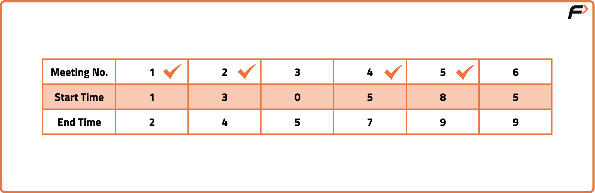
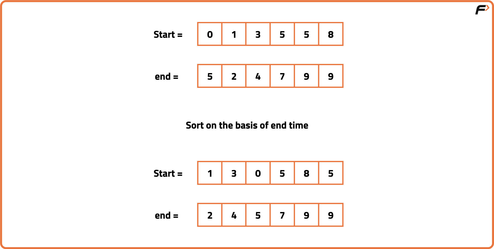
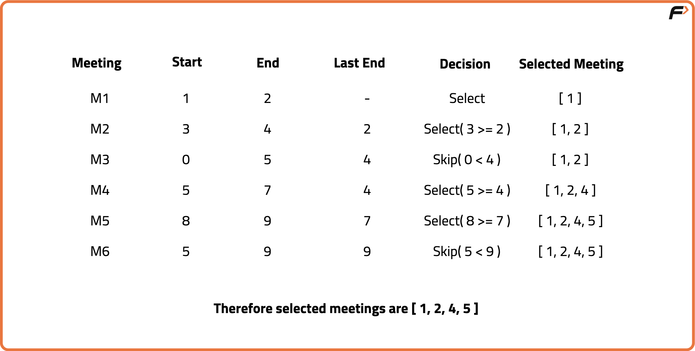

N meetings in one room
Problem Statement: There is one meeting room in a firm. You are given two arrays, start and end each of size N. For an index ‘i’, start[i] denotes the starting time of the ith meeting while end[i] will denote the ending time of the ith meeting. Find the maximum number of meetings that can be accommodated if only one meeting can happen in the room at a particular time. Print the order in which these meetings will be performed.
Examples
Input: N = 6, start[] = {1,3,0,5,8,5}, end[] = {2,4,5,7,9,9} Output: [1, 2, 4, 5] Explanation: These meeting can be conducted in the room.
Input: N = 2, start[] = {1,5}, end[] = {7,8} Output: [1] Explanation: Any one out of the two meeting can take place.
Disclaimer: Here is the practice link to help you assess your knowledge better. It's highly recommend trying to solve it before looking at the solution.
Approach
Algorithm
We need to schedule as many meetings as possible in a single room without overlaps. The key observation is that once we choose a meeting that ends earliest, it leaves the room available for more potential meetings afterward. This naturally leads to a greedy approach, where instead of testing all possible combinations we pick meetings in an order that maximizes free time for future meetings. The greedy choice is to always select the meeting that finishes earliest among the available ones.
- Sort meetings by end time so that the ones that finish earliest are considered first.
- Select the first meeting in the sorted list and mark its end time as the last occupied time.
- Iterate through remaining meetings, and for each, check if its start time is strictly greater than the last occupied end time.
- If condition holds, include that meeting in the schedule and update the last occupied end time to this meeting’s end time.
- Continue until all meetings are checked, resulting in the maximum possible non-overlapping meetings in the room.


Code
#include <bits/stdc++.h>
using namespace std;
// Class to hold solution logic
class Solution {
public:
// Function to get all meetings that can be scheduled
vector<int> maxMeetings(vector<int>& start, vector<int>& end) {
// Store meetings as (end_time, start_time, original_index)
vector<tuple<int, int, int>> meetings;
for (int i = 0; i < start.size(); i++) {
// i+1 for 1-based indexing
meetings.push_back({end[i], start[i], i + 1});
}
// Sort by end time
sort(meetings.begin(), meetings.end());
vector<int> result; // To store meeting indices
int lastEnd = -1;
// Traverse sorted meetings
for (auto& m : meetings) {
int e = get<0>(m);
int s = get<1>(m);
int idx = get<2>(m);
// If meeting starts after last one ends
if (s > lastEnd) {
// Store index
result.push_back(idx);
// Update last end time
lastEnd = e;
}
}
return result;
}
};
// Main driver code
int main() {
vector<int> start = {1, 3, 0, 5, 8, 5};
vector<int> end = {2, 4, 6, 7, 9, 9};
Solution sol;
vector<int> res = sol.maxMeetings(start, end);
for (int idx : res) cout << idx << " ";
}
Complexity Analysis
Time Complexity: O(N*logN) + O(N), We sort the entire start and end time array and then iterate over every interval one by one.Space Complexity: O(N), additional space used to store tuple of start time, end time and index.